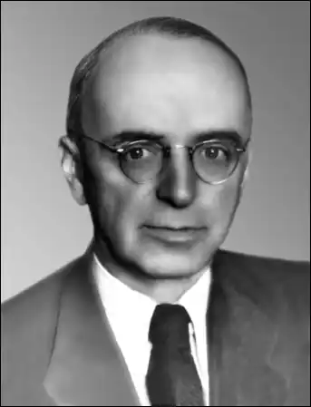

(1884 — 1961)
О. І. Білецький народився 2 листопада 1884p. поблизу Казані в сім'ї агронома. Вчився спочатку в одній з казанських гімназій, а після переїзду батьків до Харкова — в харківській 3-й гімназії, яку закінчив у 1902p. Далі — навчання на історико-філологічному факультеті Харківського університету.
В студентські роки Білецький уже заявляє про себе як про серйозного дослідника в галузі філології (оригінальна наукова розвідка "Легенда о Фаусте в связи с историей демонологии", яка була надрукована в двох випусках "Записок Неофилологического общества при С.-Петербургском университете" (1911, 1912)). Закінчивши 1907р. університет, О. І. Білецький працює викладачем у харківських гімназіях та в реальному училищі й одночасно вчиться в аспірантурі. В 1909 — 1912 pp. він живе у Петербурзі, де готується до складання магістерських екзаменів. З 1912p. О. І. Білецький — приват-доцент Харківського університету по кафедрі російської мови і літератури. Публікує кілька літературознавчих і мистецтвознавчих статей, пише велику роботу, що була згодом (у 1918р.) захищена ним як магістерська дисертація, — "Эпизод из истории русского романтизма. Русские писательницы 1830 — 1860-х годов". 1916р. виступає з доповіддю "О преподавании древнерусской литературы в средней школе" на педагогічному з'їзді в Харкові. 1922р. в межах полеміки з формалістами виходить стаття "Новейшие течения в русской науке о литературе". В 1923 — 1924 pp. О. І. Білецький друкується на сторінках тогочасних українських літературних журналів та альманахів ("Шляхи мистецтва", "Книга", "Червоний шлях", "Плуг", "Гарт") — переважно як рецензент. Найперші його рецензії (на книжки В. Поліщука і Г. Пєтникова) були опубліковані у 1922р. В цей період виходять оглядові статті "Двадцять років нової української лірики (1903 — 1923)" (1924) і "Про прозу взагалі та про нашу прозу 1925 року" (1926); статті "Українська драматургія післяжовтневої доби" (1926) і "Украинская литература послеоктябрьской поры" (1930); нариси творчості ряду поетів і прозаїків — здебільшого це передмови до збірок їхніх творів, — "Дмитро Загул" (1927), "Павло Тичина" (1927), "Володимир Сосюра" (1928). У 30-х роках та у роки війни на сторінках періодики друкується ще ряд статей і рецензій, присвячених творчості радянських письменників (М. Горького, В. Маяковського, О. Толстого, О. Серафимовича, М. Островського). Російській літературній класиці присвячені роботи "Достоевский и натуральная школа в 1846 году" (1922), "Н. С. Лесков. Личность, творчество" (1923, неопубліков.), "Из материалов для изучения И. С. Тургенева" (1923), "Тургенев и русские писательницы 1830 — 1860-х годов" (1923), "Очередные вопросы изучения русского романтизма" (1927). Чимало сил і енергії Білецький в 20-х роках віддає театральній справі. Він працює у відповідному відділі Наркомосу України, викладає в Харківському театральному інституті, в театральних студіях і школах, стає одним з організаторів першого українського дитячого театру і харківського "Героїчного театру". Видана книжка "Старинный театр в России" (1923), ряд інших праць, присвячених історії і сучасному станові вітчизняного театру. Виступає також як драматург, написавши кілька п'єс для дітей (під псевдонімом Річард Побєдимський). Білецький багато працює як літературознавець. Йому належать роботи "Маркс, Енгельс і історія літератури" (1934р.; монографія, яка була однією з перших в радянському літературознавстві спроб конкретного аналізу літературно-естетичних поглядів основоположників наукового комунізму), "В мастерской художника слова", "Проблема синтезу в літературознавстві", "Симеон Полоцький та українське письменство XVII віку", "Старинный театр в России". 1940р. виходить російською мовою стаття "Проблема синтеза в литературоведении". У 1937р. О. І. Білецькому було присуджено — без захисту дисертації, за сукупністю праць — учений ступінь доктора філологічних наук, у 1939р. він обирається академіком АН УРСР, у 1946р. — членом-кореспондентом АН СРСР і в 1958р. — дійсним її членом. 1941р. йому присвоєно звання заслуженого діяча науки УРСР. П. Г. Тичина висував в 1946р. кандидатуру О. І. Білецького на пост віце-президента Академії наук УРСР. Білецький постійно вів науково-організаторську роботу, яка особливо активно розгортається тоді, коли він почав працювати в Науково-дослідному інституті Тараса Шевченка, створеному 1926р. в системі Наркомосу УРСР і пізніше, в 1936р., переданому у відання Академії наук України. Очолював в 1939 — 1941 pp. і з 1944р. до кінця життя Інститут літератури ім. Т. Г. Шевченка АН УРСР. Виконував обов'язки віце-президента АН УРСР (1946 — 1948), члена Президії АН УРСР (1948 — 1952), головного редактора журналу "Радянське літературознавство" (з часу його заснування — 1957) та ін. В поле зору О. Білецького як дослідника літературної давнини потрапляють: перекладна література періоду XI — XIII ст., зародження драматичної літератури на Україні, російська література на рубежі XVII і XVIII ст., "Повчання" Володимира Мономаха і "Слово о полку Ігоревім" (1947), діяльність Івана Вишенського, Григорія Сковороди, Симеона Полоцького (з цієї теми залишилося лише чотири статті, а рукопис монографії загинув під час війни). Він є автором розділів, присвячених українській літературі періоду XIV — XVIII ст. у двотомній "Історії української літератури" (1954); праць про стародавню писемність; складає найповнішу за обсягом охопленого матеріалу "Хрестоматію давньої української літератури (Доба феодалізму)" (два видання — 1949, 1952); пише статтю "Слово о полку Ігоревім та українська література XIX — XX ст." (1959). Йому належать такі літературознавчі роботи, як стаття "Стан і проблеми вивчення давньої української літератури" (1959), стаття "Судьба большой эпической формы в русской литературе XIX — XX веков" (1948), тези "Русская литература и античность" (1961). Багато працює Білецький над дослідженням творчості О. С. Пушкіна: перша пушкінознавча робота ("К истории создания "Капитанской дочки") з'явилася в 1930р., останні — в середині 50-х років; створено працю "Гоголь і Пушкін"; аналіз віршів "Я помню чудное мгновенье" і "Анчар" здійснено в розвідці "Из наблюдений над стихотворными текстами А. С. Пушкина". Він публікує також роботи, присвячені вивченню дожовтневої української літератури: статті "Українська література серед інших літератур світу" (1958), "До питання про періодизацію історії дожовтневої української літератури" (вперше надруковано в 1963р.); зокрема, дослідженню російсько-українських літературних взаємозв'язків: "Шевченко и русская культура" (1939), "Леся Українка і російська література 80 — 90-х років" (1948), "Пушкін і Україна" (1954), "Гоголь і українська література" (1954), "Шляхи розвитку російсько-українського літературного єднання" (1955), "До питання "Іван Франко і російська література" (1956). Велика кількість робот присячена вивченню творчості того або іншого письменника XIX — початку XX ст., з’являються такі літературознавчі портрети: — І. П. Котляревський ("Українська література серед інших літератур світу", стаття "Энеида" И. П. Котляревского" (1961)); — Г. Ф. Квітка-Основ'яненко (стаття "Українська проза першої половини XIX століття (від Г. Квітки до прози "Основи")" (1960)); — І. С. Нечуй-Левицький (робота "Іван Семенович Левицький (Нечуй)" (1956 р.)); — Леся Українка (одна із статей — "Антична драма Лесі Українки ("Кассандра")" — з'явилася ще у 1929р.); — Т. Г. Шевченко (праці "Тарас Шевченко" (1939), "Шевченко и мировая литература" (1939), "Шевченко и русская культура" (1939), "Русские повести Т. Г. Шевченко" (1948), "Світове значення творчості Шевченка" (1951), "Шевченко і слов'янство" (1952), "Завдання і перспективи вивчення Шевченка" (1961)); — Іван Франко (праці "Художня проза І. Франка" (1956), "Франко й індійська література" (1956), "Світове значення Івана Франка" (1956), "Проблеми радянського франкознавства" (1956), "Поезія" (1958) та нарис "Шляхи розвитку дожовтневого українського літературознавства" (1959)) — Павло Тичина (літературознавчий портрет 1957р.); — Максим Рильський (літературознавчий портрет 1960р.). О. Білецький є також автором статей про Данте, Аду Негрі, Кеведо, Сервантеса, Шекспіра, Свіфта, Вальтера Скотта, Діккенса, Байрона, Уеллса, Рабле, Лесажа, Мольєра, Шатобріана, Гюго, Доде, Жорж Занд, Барбюса, Гете, Бехера, Е. Толлера, Есхіла, Гомера, Лонга, Арістофана, Овідія, Ювенала, Лукреція та ін.; статей про французький романтизм, про сучасну художню літературу на Заході. Дослідження 30-х років "Литература Древней Индии" було лише частково використане в його публікаціях. В літературно-критичних виступах другої половини 40-х і 50-х років дослідник звертається до творчості таких письменників, як Н. Рибак, В. Владко, С. Скляренко, О. Полторацький, літературознавців М. Гудзія, П. Попова, Л. Новиченка. Питання розвитку радянської літератури і літературної науки розглянуті в статтях "Завдання української прози..." (1946), "Завдання та перспективи розвитку українського літературознавства" (1957), брошурі "Українське літературознавство за сорок років (1917 — 1957)" (1957). Проблема специфіки літературно-художньої творчості поставлена в статті "О специфике литературного искусства" (тривалий час вона залишалася в архіві вченого й була опублікована лише 1984р.). Є підстави говорити про наукову школу академіка Білецького, з якої вийшла ціла плеяда радянських учених-літературознавців і літературних критиків. Помер Олександр Іванович Білецький 2 серпня 1961р.